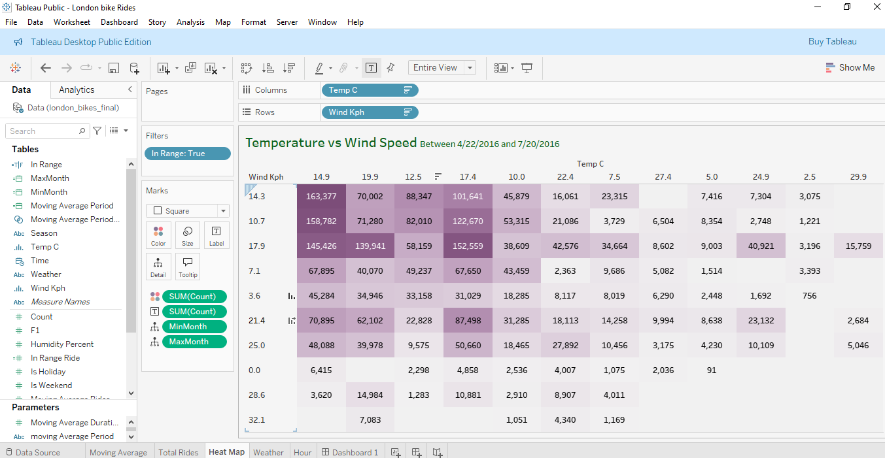

These Projects showcase my expertise in building "Business Intelligence Stories" that move beyond static charts to offer dynamic, exploratory experiences. By utilizing Level of Detail (LOD) Expressions and Parameter Actions, I build dashboards that allow stakeholders to peel back layers of data, from high-level KPIs to granular transactional details.
Data Overview
This project demonstrates the ability to translate complex urban datasets into actionable insights for city planners and transport authorities. The project implements advanced Tableau features to handle complex aggregations.
